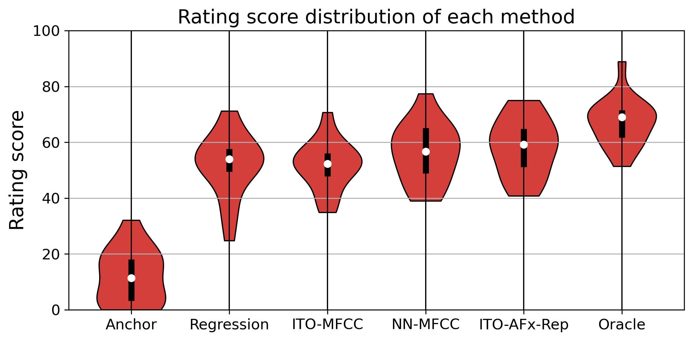

Abstract
Style Transfer with Inference-Time Optimisation (ST-ITO) is a recent approach for transferring the applied effects of a reference audio to an audio track. It optimises the effect parameters to minimise the distance between the style embeddings of the processed audio and the reference. However, this method treats all possible configurations equally and relies solely on the embedding space, which can result in unrealistic configurations or biased outcomes. We address this pitfall by introducing a Gaussian prior derived from the DiffVox vocal preset dataset over the parameter space. The resulting optimisation is equivalent to maximum-a-posteriori estimation. Evaluations on vocal effects transfer on the MedleyDB dataset show significant improvements across metrics compared to baselines, including a blind audio effects estimator, nearest-neighbour approaches, and uncalibrated ST-ITO. The proposed calibration reduces the parameter mean squared error by up to 33% and more closely matches the reference style. Subjective evaluations with 16 participants confirm the superiority of our method in limited data regimes. This work demonstrates how incorporating prior knowledge at inference time enhances audio effects transfer, paving the way for more effective and realistic audio processing systems.

Figure 1: Overview of the proposed calibration method. The prior and the likelihood log-probability densities in the parameter space are represented by two concentric ellipses, coloured blue and green, respectively. Darker colours indicate higher density. The coloured arrows indicate the gradients of the log-probability densities. The red star is the optimal parameters for the vocal effects style transfer.
Listening Samples
This section contains the listening samples used in our
MUSHRA test. The reference vocals and the input dry
vocals
are taken from the MedleyDB dataset.
Reference refers to the track with target effects
applied, Anchor is a different vocal track with
no effects applied.
The rest of the columns are the results of applying
different effect settings using diffvox on Anchor
to match the
target effects in Reference.
Regression uses a CNN to directly estimate the
parameters from Reference.
NN-MFCC picks the nearest-neighbour vocal preset
in the diffvox training set based on MFCC distance.
ITO-MFCC uses the proposed ITO calibration with
MFCC distance as the style loss.
ITO-AFx-Rep uses the proposed ITO calibration
with the embedding distance from the pre-trained AFx-Rep
encoder as the style loss.
Oracle uses the effect parameters estimated by
accessing the ground truth dry vocal track of the
reference.
In addition, we separate this section into Group A and
B, which were randomly assigned to different
participants in the MUSHRA test to avoid fatigue
effects. The groups are divided so that each track
appears only once in each group, and if it is used as a
reference in one group, it can only be used as the raw
vocal in the other group.

Figure 2: Violin plot of the average ratings sorted based on the mean. The white dot is the median, and the black thick lines are the interquartile range.
Group A
| Reference | Anchor | Regression | NN-MFCC | ITO-MFCC | ITO-AFx-Rep | Oracle |
|---|---|---|---|---|---|---|
Group B
| Reference | Anchor | Regression | NN-MFCC | ITO-MFCC | ITO-AFx-Rep | Oracle |
|---|---|---|---|---|---|---|
Citation
@inproceedings{ycy2025ito,
title={Improving Inference-Time Optimisation for Vocal Effects Style Transfer with a Gaussian Prior},
author={Chin-Yun Yu and Marco A. Martínez-Ramírez and Junghyun Koo and Wei-Hsiang Liao and Yuki Mitsufuji and György Fazekas},
year={2025},
booktitle={Proc. WASPAA},
}